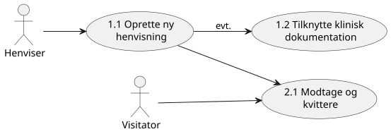
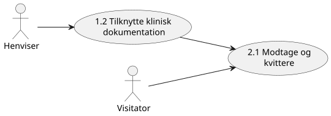

DK MEDCOM REFERRAL LM
0.1.0 - draft

DK MEDCOM REFERRAL LM
0.1.0 - draft

DK MEDCOM REFERRAL LM - Local Development build (v0.1.0) built by the FHIR (HL7® FHIR® Standard) Build Tools. See the Directory of published versions
Henviseren udfærdiger og afsender en ny henvisning til et modtagende tilbud. Henvisningen repræsenteres som en ServiceRequest -ressource med status proposed og sendes i en FHIR- Bundle . Henvisningen indeholder patientoplysninger, indikation, hastegrad og ønsket ydelse.
Brugerhistorie:
Som henviser ønsker jeg at kunne oprette og afsende en struktureret henvisning via FHIR,
når jeg har truffet en klinisk beslutning om at viderehenvise en patient,
så visitatoren modtager alle nødvendige oplysninger på et standardiseret format.

Henviseren vedhæfter supplerende klinisk materiale til en eksisterende henvisning — fx laboratoriesvar, billeddiagnostik eller tidligere epikriser. Materialet knyttes til ServiceRequest -ressourcen via referencer til DiagnosticReport , Media eller DocumentReference .
Brugerhistorie:
Som henviser ønsker jeg at kunne vedhæfte relevant klinisk dokumentation til en eksisterende henvisning,
når jeg vurderer at visitatoren har brug for supplerende materiale for at træffe en god afgørelse,
så beslutningsgrundlaget er samlet ét sted.

Henviseren opdaterer indholdet af en allerede afsendt henvisning — fx korrigerer indikation, hastegrad eller kontaktoplysninger. Opdateringen sker via en PUT -operation på den eksisterende ServiceRequest , og der sættes et revisionsflag så visitatoren notificeres.
Brugerhistorie:
Som henviser ønsker jeg at kunne rette indholdet i en allerede afsendt henvisning,
når jeg opdager en fejl eller patientens kliniske situation ændrer sig,
så visitatoren altid arbejder ud fra korrekte og aktuelle oplysninger.
Henviseren annullerer en afsendt henvisning der endnu ikke er ekspederet. ServiceRequest -status sættes til revoked og en notifikation sendes til visitatoren.
Brugerhistorie:
Som henviser ønsker jeg at kunne tilbagekalde en afsendt henvisning,
når patienten ikke længere ønsker forløbet eller det kliniske grundlag er bortfaldet,
så visitatoren ikke bruger ressourcer på en henvisning der ikke skal ekspederes.
Henviseren følger løbende op på status for egne udestående henvisninger. Dette kan ske via FHIR-subscription (push) eller ved periodisk polling mod visitatorens FHIR-endpoint.
Brugerhistorie:
Som henviser ønsker jeg løbende at kunne se status på mine afsendte og udestående henvisninger,
når jeg har behov for overblik over patienternes videre forløb,
så jeg kan følge op og informere patienterne korrekt.
Henviseren modtager visitatorens endelige afgørelse — accept, afvisning eller alternativt tilbud — og integrerer denne i eget journalsystem. Afgørelsen leveres som en Task -ressource eller notifikation med reference til den oprindelige ServiceRequest .
Brugerhistorie:
Som henviser ønsker jeg automatisk at modtage visitatorens afgørelse i mit journalsystem,
når visitatoren har truffet beslutning om accept, afvisning eller alternativt tilbud,
så jeg hurtigt kan handle og orientere patienten.
Visitatoren modtager en indkommende FHIR- Bundle med en ny ServiceRequest og sender en teknisk kvittering (ACK) tilbage til afsendersystemet. Henvisningen registreres med status active eller on-hold afhængigt af triagekapacitet.
Brugerhistorie:
Som visitator ønsker jeg automatisk at modtage og kvittere for indkomne henvisninger via FHIR,
når en ny ServiceRequest ankommer i mit endpoint,
så afsenderen hurtigt får bekræftet at henvisningen er modtaget korrekt.
Visitatoren vurderer henvisningens faglige indhold, klassificerer hastegrad og prioriterer i forhold til øvrige indkomne henvisninger. Triage-udfaldet dokumenteres i en Task -ressource med udfald og begrundelse.
Brugerhistorie:
Som visitator ønsker jeg at kunne foretage en struktureret triage af en modtaget henvisning og dokumentere mit udfald,
når en ny eller opdateret henvisning er klar til klinisk vurdering,
så prioriteringen er sporbar og ensartet på tværs af alle indkomne sager.
Visitatoren accepterer henvisningen og opretter et forløb. Der bookes en tid, og ServiceRequest -status opdateres til active . En Appointment -ressource oprettes og linkes til henvisningen.
Brugerhistorie:
Som visitator ønsker jeg at kunne acceptere en henvisning og oprette en booking,
når min visitationsafgørelse er positiv,
så patienten får en tid og henviseren automatisk modtager bekræftelsen.
Visitatoren afviser henvisningen med en faglig eller kapacitetsmæssig begrundelse. ServiceRequest -status sættes til revoked med en Task -ressource der angiver årsag til afvisning.
Brugerhistorie:
Som visitator ønsker jeg at kunne afvise en henvisning med en dokumenteret begrundelse,
når indikationen ikke er opfyldt eller kapaciteten er nået,
så henviseren forstår årsagen og kan tage stilling til næste skridt for patienten.
Visitatoren vurderer at henvisningen hører hjemme et andet sted og videresender. Der oprettes en ny ServiceRequest med reference til den originale via replaces -attributten, og der sendes notifikation til den oprindelige henviser.
Brugerhistorie:
Som visitator ønsker jeg at kunne videresende en fejlplaceret henvisning til rette modtager,
når jeg vurderer at et andet tilbud er bedre egnet,
så patienten ikke unødigt forsinkes og henviseren holdes orienteret om omdirigeringen.
Visitatoren revurderer hastegraden for en allerede modtaget henvisning — fx på baggrund af ny klinisk information eller ændret kapacitetssituation. Prioriteten opdateres på ServiceRequest og der sendes notifikation til henviseren.
Brugerhistorie:
Som visitator ønsker jeg at kunne justere prioriteten på en allerede modtaget henvisning,
når ny klinisk information eller ændret kapacitetssituation tilsiger det,
så den kliniske hastegrad afspejles korrekt og henviseren notificeres om ændringen.
Visitatoren mangler oplysninger for at kunne triagere og sender en struktureret anmodning til henviseren om at supplere med konkrete kliniske data — fx blodprøveresultater, BMI, medicinliste eller tidligere forløb.
Brugerhistorie:
Som visitator ønsker jeg at kunne sende en struktureret anmodning om supplerende oplysninger til henviseren,
når grundlaget for triage er utilstrækkeligt,
så jeg kan træffe en fagligt forsvarlig visitationsafgørelse uden at afvise unødigt.
Henviseren modtager en supplement-anmodning og besvarer denne ved at sende de efterspurgte oplysninger. Svaret sendes som en Communication -ressource med reference til den oprindelige CommunicationRequest og til ServiceRequest .
Brugerhistorie:
Som henviser ønsker jeg at kunne besvare en supplement-anmodning med de efterspurgte kliniske oplysninger,
når visitatoren har bedt om yderligere data,
så visitatoren hurtigt kan genoptage og afslutte triage-processen.
Henviser og visitator udveksler kliniske spørgsmål og svar for at afklare indikation, behandlingsegnethed eller alternativ tilgang. Dialogen føres som en kæde af Communication -ressourcer med indbyrdes referencer.
Brugerhistorie:
Som henviser og visitator ønsker vi begge at kunne føre en struktureret faglig dialog om en konkret henvisning,
når indikation, egnethed eller behandlingsvalg er uklart,
så vi i fællesskab kan nå frem til den rigtige afgørelse for patienten uden at skulle bruge andre kommunikationskanaler.
Visitatoren notificerer automatisk henviseren ved statusskift på en afsendt henvisning — fx modtaget, under vurdering, accepteret eller afvist. Notifikationen leveres via FHIR-subscription og indeholder reference til den opdaterede ServiceRequest .
Brugerhistorie:
Som henviser ønsker jeg automatisk at modtage en notifikation,
når status på en af mine henvisninger ændrer sig hos visitatoren,
så jeg til enhver tid er opdateret om forløbet uden at skulle forespørge aktivt.
Henviser og visitator forhandler i fællesskab om et alternativt tilbud,
når det primære visitationsspor ikke er muligt. Dialogen foregår via Communication , og den resulterende aftale dokumenteres i en Task med reference til det alternative tilbud.
Brugerhistorie:
Som visitator ønsker jeg at kunne indlede en dialog med henviseren om et alternativt tilbud,
når jeg ikke kan imødekomme den primære henvisning,
så patienten ikke ender i en blindgyde og vi i fællesskab finder en løsning.
Visitatoren opdager en fejl i en modtaget henvisning — fx forkert CPR-nummer, forkert ydelseskode eller manglende samtykkedokumentation — og indleder en dialog med henviseren om korrektion. Korrektionen aftales via Communication -besked og gennemføres med en efterfølgende PUT -opdatering af ServiceRequest .
Brugerhistorie:
Som visitator ønsker jeg at kunne kontakte henviseren og aftale en korrektion,
når jeg opdager en fejl i en modtaget henvisning,
så fejlen rettes på en koordineret og sporbar måde uden at vi mister historikken.